StoryTime App Design
Team Project, Fall 2013
CS 160: UI Design and Development
Berkeley, CA
Final Process Document
Overview
- Team: Brittany Cheng, Kush Agrawal, Jody Sheu, Christina Wong.
- During a semester-long course on user interface design, we researched, brainstormed, designed, and prototyped a mobile application for connecting families through storytelling.
Process
- Wanted to create an app for families, so we selected target users of older grandparents and younger grandchildren.
- Conducted contextual inquiry and task analysis with target users to understand how families connect with each other.
- Created Balsamiq mockups and tested with users for initial feedback.
- Updated designs iteratively based on feedback from users and instructors.
- Final designs created in Photoshop and Illustrator, then prototyped in Android.
Original Mockups
Created using Balsamiq mockups tool
General Navigation: Navigation of app is between three main views: family, feed, and profile. The feed view consists of a "newsfeed" of stories from various family members. Users can click into a specific story to view more details. The two buttons, "Request a Story" and "Create a Story," are the main forms of interaction between users.


Request Story: Users can "request" stories from other users by filling out a simple form.


Create Story: Upon receiving a story request, a user can create a story through a multi-step process. We later simplified this process after receiving user feedback.


Final Designs
Created using Photoshop, Illustrator, and Flinto. Prototyped in Android.
General Navigation: The navigation of app remained the same but we simplified the feed as a result of feedback from users who could not understand the unnecessary extra elements and iconography. We also simplified individual stories into a recording over selected photos, allowing the "create a story" process (see below) to be simpler.
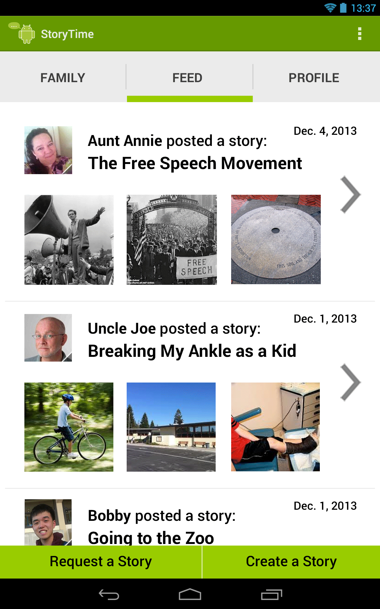
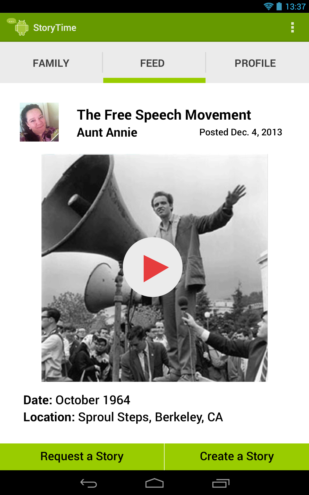
Request Story: The design for the request action remained largely the same throughout several iterations, though we did increase button and text size as a result of feedback from senior users.
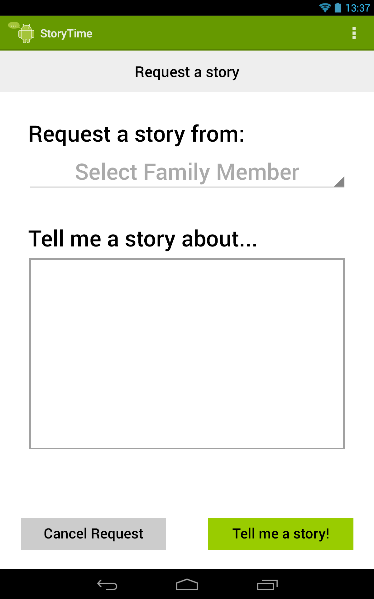

Create Story: We simplified the create story process by guiding users through a 3-step process: choose a few photos for story, add details of story, record story (minimizes need for typing out long stories). This task was implemented in Android.
Choose a few photos for your story.
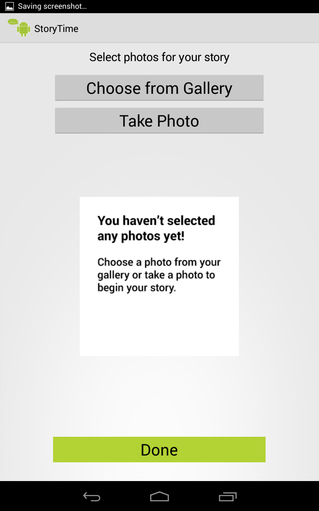
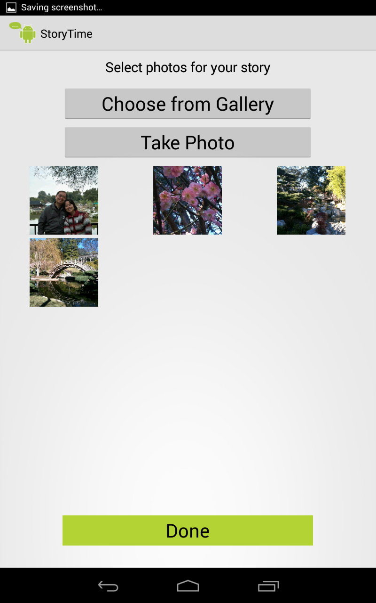
(Left): Add some details about your story. (Right and Below): Begin recording your story. Simply press the record button, begin recording your story, and click on the next picture to move on to the next picture.
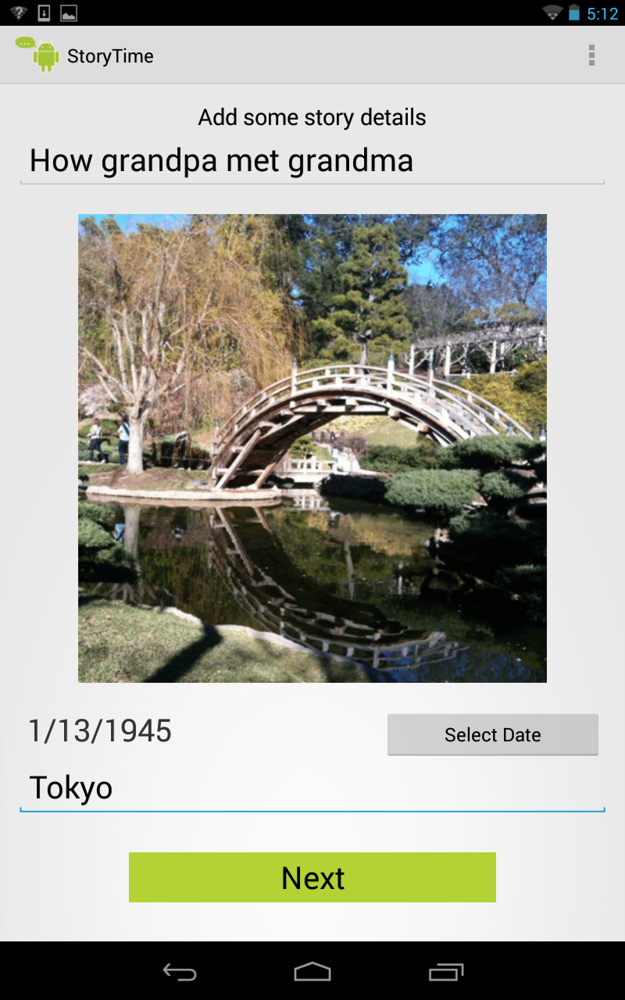
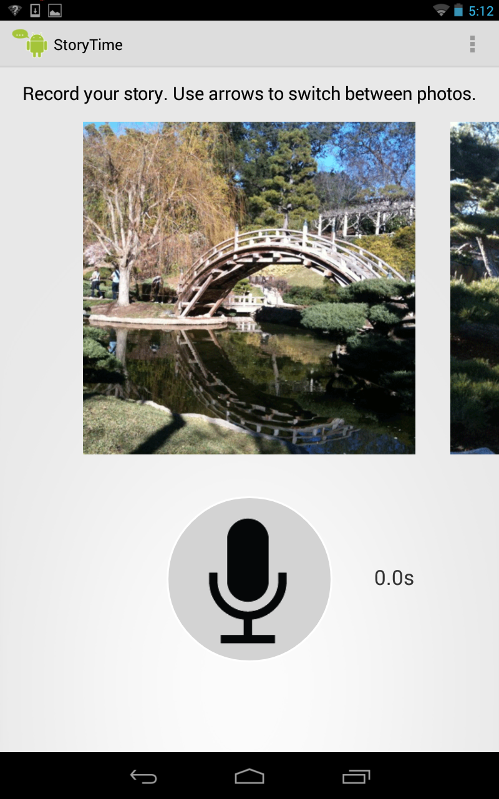
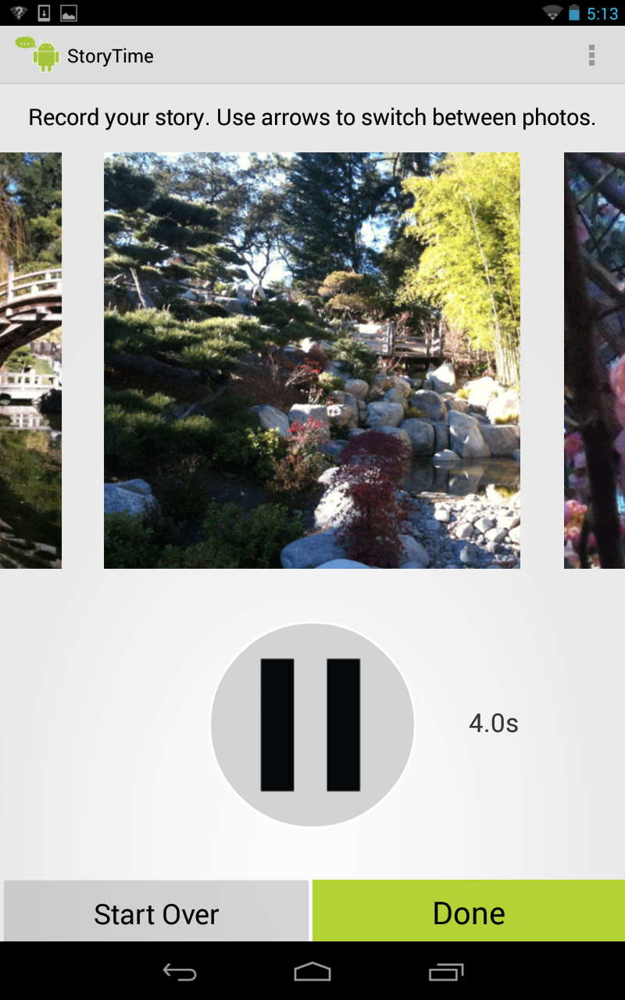
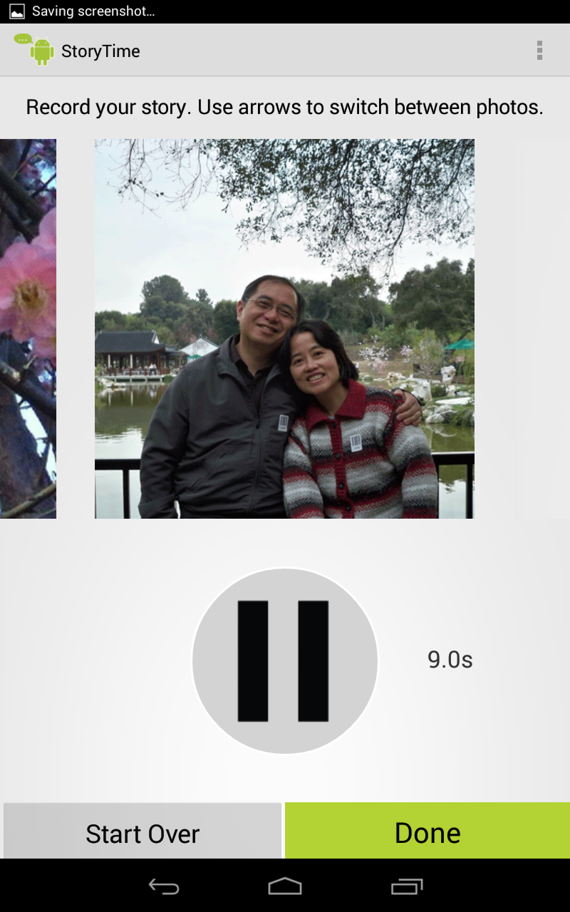
When you're finished, preview and publish!
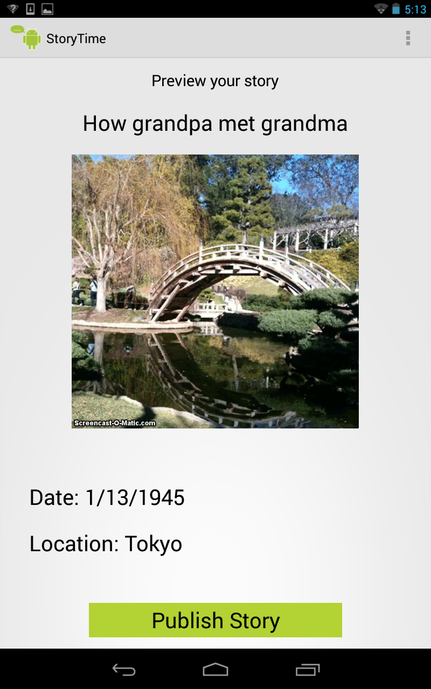
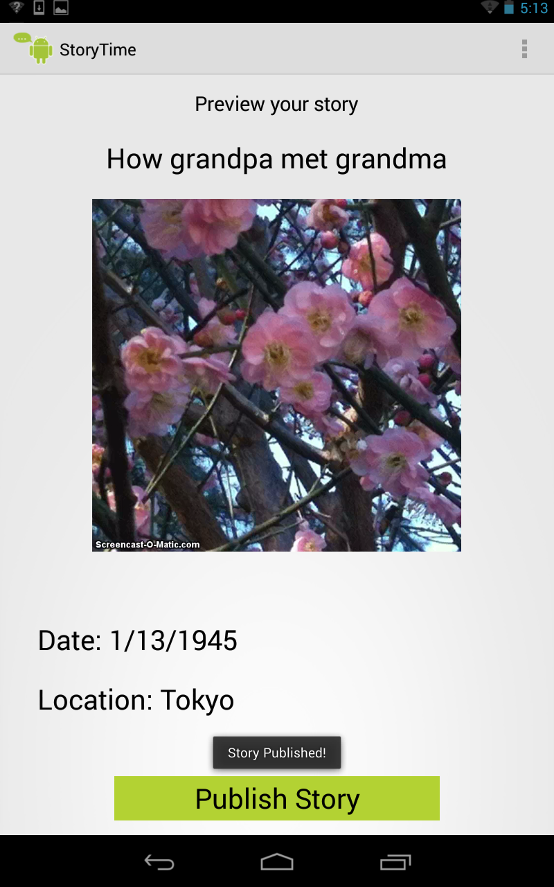